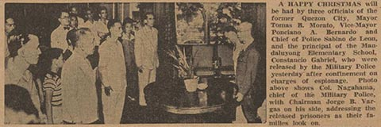

|
j
a v a s c r i p t |
December 24, 1942
Tribune: "4 Spy Suspects Freed," including the Mayor of Quezon City, Tomas B. Morato and the Vice Mayor Ponciano A. Bernardo. They've been in custody since July 19. "The release is in keeping with the policy of the Japanese authorities of 'condemning the offense, and not its perpetrator'" — a new one — but also "in keeping with the spirit of the Yuletide season," and due to "the warm consideration of Col. Akira Nagahama, Commander of the Military Police." The Colonel told them that "they were being released because they had been cleared of the charge" — not guilty! Even sillier, the paper says, "they were overwhelmed by the benevolence of the Japanese authority." And if that's not enough: "Fort Santiago ... has now become the home of kindness and benevolence, the fountainhead of happiness and joy." Manilans who read the piece didn't know whether to weep or laugh.

Released
Today I saw 11 Zeros overhead; an officer told Barreto (ex-USAFFE pilot) that we expect American planes over here any day." |